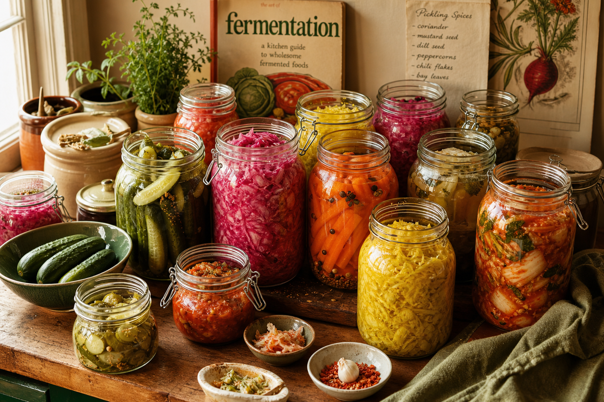
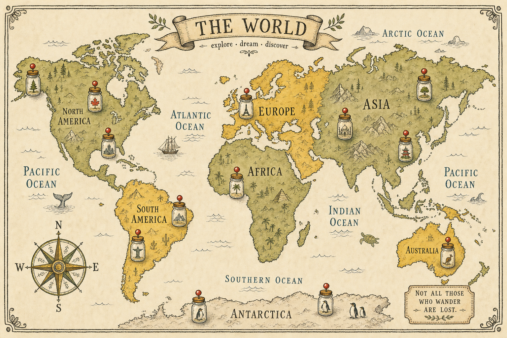

Lacto-Ferment
A scholarly love letter to fermentation. Field notes from kraut crocks, kimchi pots, miso vats, and the brave little airlocks bubbling away in basements worldwide.


The bedrock of all lacto-fermentation. By weight, 2.5% salt to crushed vegetable. No iodized table salt, no exceptions.
Press the cabbage down with brutal honesty until the brine rises above. A clean glass weight holds back the air.
Bubbles arrive on day three. Day seven, things get serious. Day fourteen, you have lunch. Day twenty-one, art.
Time is the only ingredient you can’t buy.— Sandor, Brinemaster Emeritus